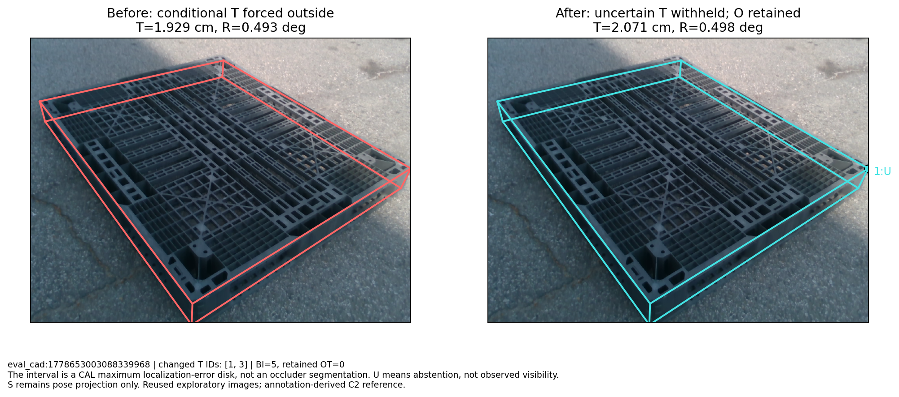
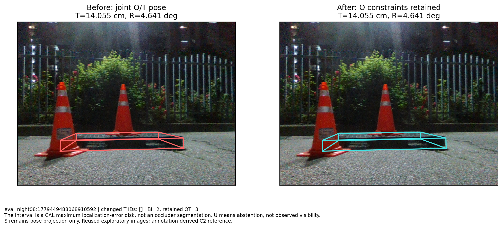
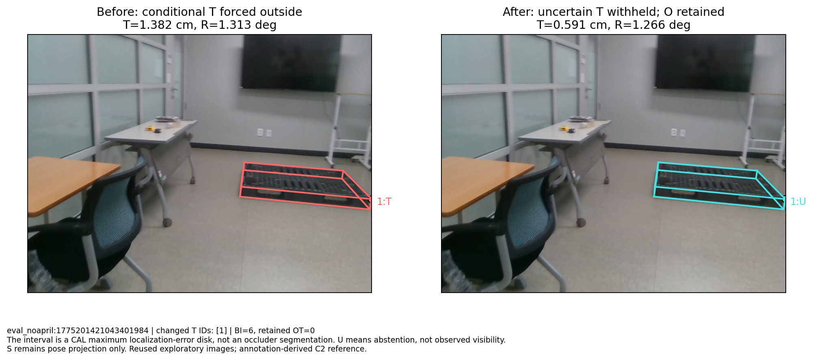
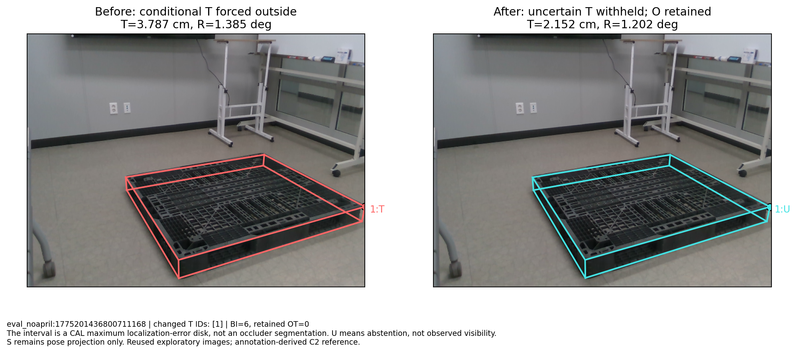
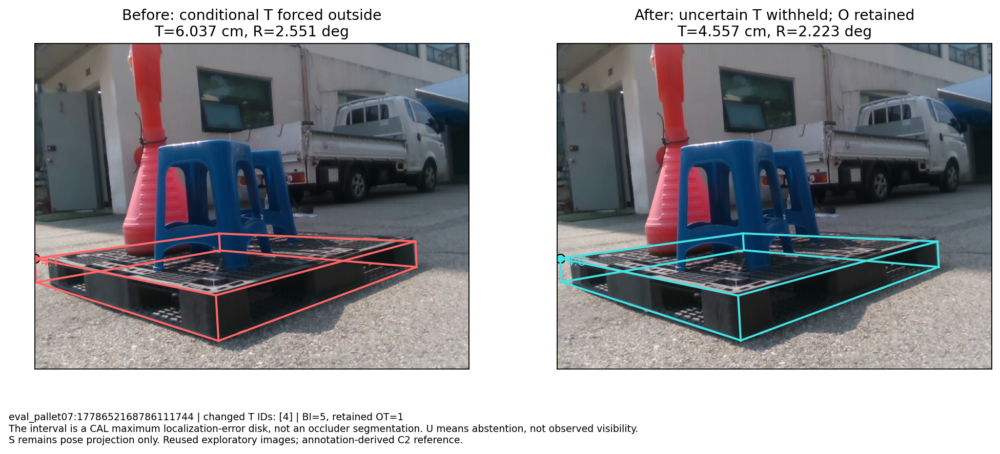

Every primary frame whose previous pose changed with O/T constraints. Includes CAL and TEST, gains and losses.

eval_cad:1778653003088339968 | changed T IDs: [1, 3] | BI=5, retained OT=0 The interval is a CAL maximum localization-error disk, not an occluder segmentation. U means abstention, not observed visibility. S remains pose projection only. Reused exploratory images; annotation-derived C2 reference.

eval_night08:1779449488068910592 | changed T IDs: [] | BI=2, retained OT=3 The interval is a CAL maximum localization-error disk, not an occluder segmentation. U means abstention, not observed visibility. S remains pose projection only. Reused exploratory images; annotation-derived C2 reference.

eval_noapril:1775201421043401984 | changed T IDs: [1] | BI=6, retained OT=0 The interval is a CAL maximum localization-error disk, not an occluder segmentation. U means abstention, not observed visibility. S remains pose projection only. Reused exploratory images; annotation-derived C2 reference.

eval_noapril:1775201436800711168 | changed T IDs: [1] | BI=6, retained OT=0 The interval is a CAL maximum localization-error disk, not an occluder segmentation. U means abstention, not observed visibility. S remains pose projection only. Reused exploratory images; annotation-derived C2 reference.

eval_pallet07:1778652168786111744 | changed T IDs: [4] | BI=5, retained OT=1 The interval is a CAL maximum localization-error disk, not an occluder segmentation. U means abstention, not observed visibility. S remains pose projection only. Reused exploratory images; annotation-derived C2 reference.